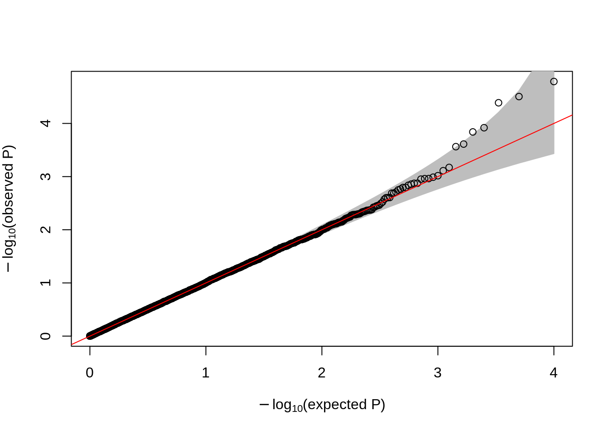
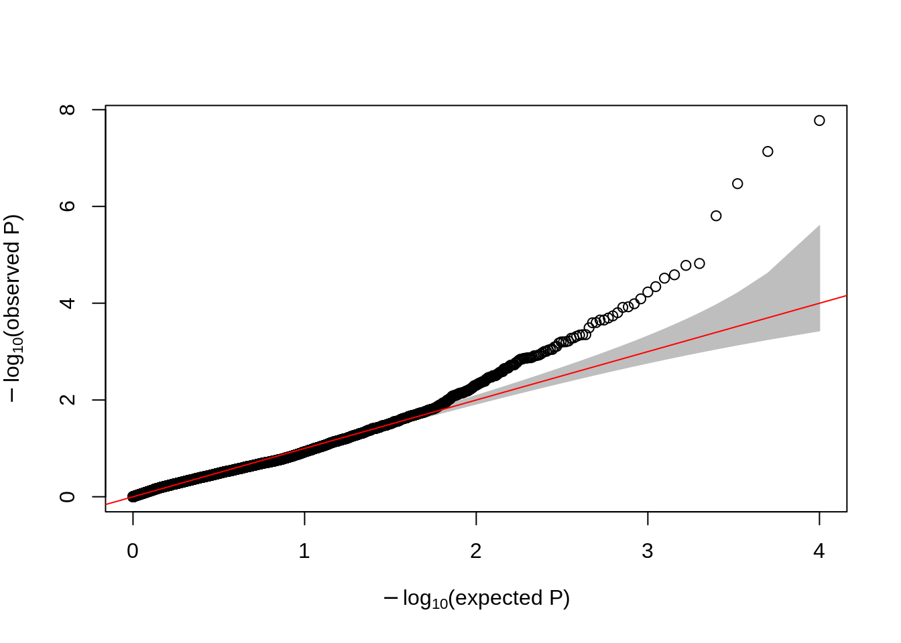
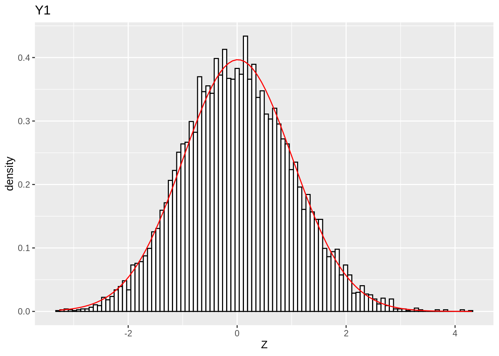
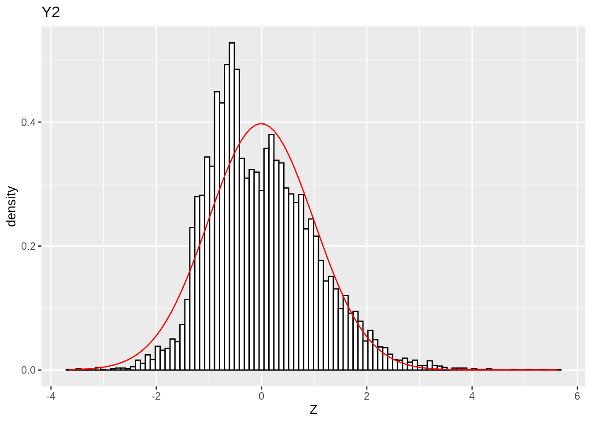
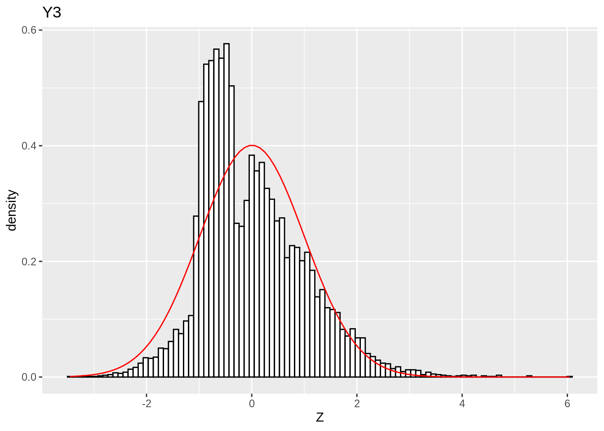
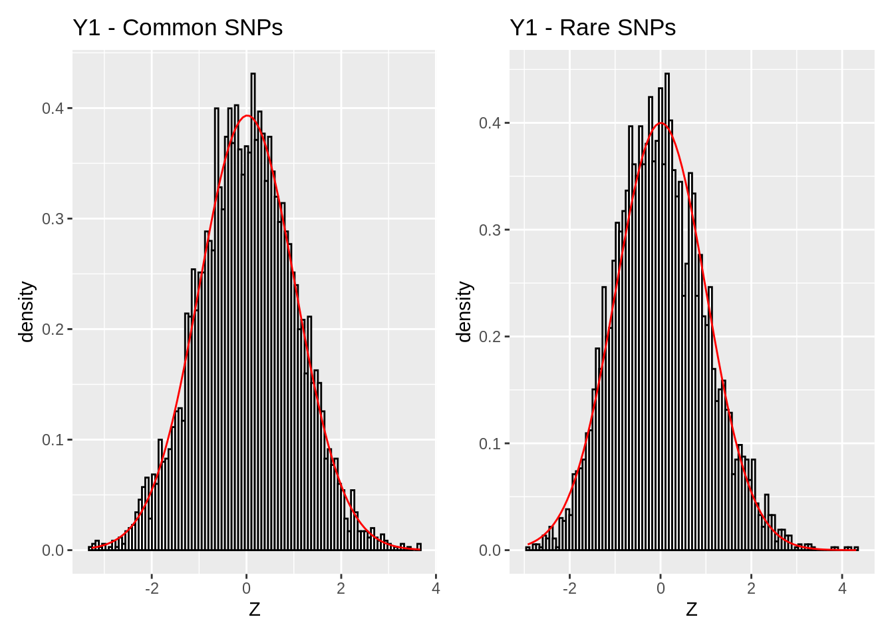
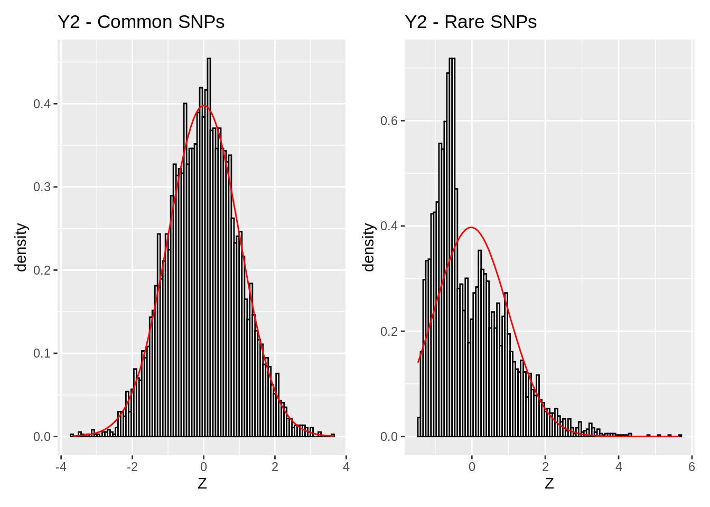
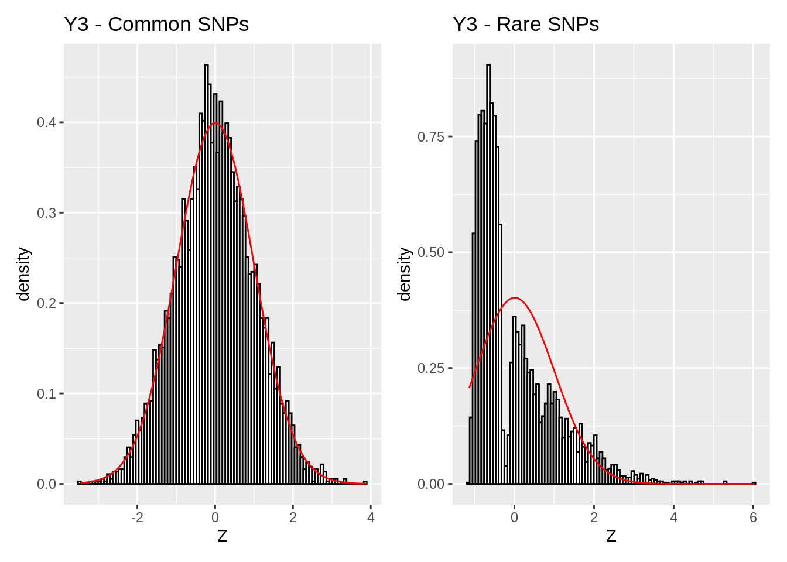

Session 08 - Exercises
Last updated: 2023-07-25
Checks: 7 0
Knit directory:
SISG2023_Association_Mapping/
This reproducible R Markdown analysis was created with workflowr (version 1.7.0). The Checks tab describes the reproducibility checks that were applied when the results were created. The Past versions tab lists the development history.
Great! Since the R Markdown file has been committed to the Git repository, you know the exact version of the code that produced these results.
Great job! The global environment was empty. Objects defined in the global environment can affect the analysis in your R Markdown file in unknown ways. For reproduciblity it’s best to always run the code in an empty environment.
The command set.seed(20230530) was run prior to running
the code in the R Markdown file. Setting a seed ensures that any results
that rely on randomness, e.g. subsampling or permutations, are
reproducible.
Great job! Recording the operating system, R version, and package versions is critical for reproducibility.
Nice! There were no cached chunks for this analysis, so you can be confident that you successfully produced the results during this run.
Great job! Using relative paths to the files within your workflowr project makes it easier to run your code on other machines.
Great! You are using Git for version control. Tracking code development and connecting the code version to the results is critical for reproducibility.
The results in this page were generated with repository version 100bd93. See the Past versions tab to see a history of the changes made to the R Markdown and HTML files.
Note that you need to be careful to ensure that all relevant files for
the analysis have been committed to Git prior to generating the results
(you can use wflow_publish or
wflow_git_commit). workflowr only checks the R Markdown
file, but you know if there are other scripts or data files that it
depends on. Below is the status of the Git repository when the results
were generated:
Untracked files:
Untracked: GWAS.ma
Untracked: analysis/SISGM15_prac6Solution.Rmd
Untracked: analysis/SISGM15_prac9Solution.Rmd
Untracked: causals.snplist
Untracked: ldRef.bed
Untracked: ldRef.bim
Untracked: ldRef.fam
Untracked: ldRef.log
Untracked: ldRef.map
Untracked: ldRef.ped
Untracked: test1.cma.cojo
Untracked: test1.jma.cojo
Untracked: test1.ldr.cojo
Untracked: test1.log
Untracked: test2.cma.cojo
Untracked: test2.jma.cojo
Untracked: test2.ldr.cojo
Untracked: test2.log
Untracked: test3.cma.cojo
Untracked: test3.jma.cojo
Untracked: test3.ldr.cojo
Untracked: test3.log
Untracked: test4.cma.cojo
Untracked: test4.jma.cojo
Untracked: test4.ldr.cojo
Untracked: test4.log
Unstaged changes:
Modified: analysis/Session08_practical.Rmd
Note that any generated files, e.g. HTML, png, CSS, etc., are not included in this status report because it is ok for generated content to have uncommitted changes.
These are the previous versions of the repository in which changes were
made to the R Markdown
(analysis/Session08_practical_Key.Rmd) and HTML
(docs/Session08_practical_Key.html) files. If you’ve
configured a remote Git repository (see ?wflow_git_remote),
click on the hyperlinks in the table below to view the files as they
were in that past version.
| File | Version | Author | Date | Message |
|---|---|---|---|---|
| html | 10cc8d8 | Joelle Mbatchou | 2023-07-24 | Build site. |
| Rmd | 0e55c6d | Joelle Mbatchou | 2023-07-24 | update s8 key |
Before you begin:
- Make sure that R is installed on your computer
- For this lab, we will use the following R libraries:
library(data.table)
library(dplyr)
library(tidyr)
library(GWASTools)
library(ggplot2)
library(patchwork)The R template to do the exercises is here.
Case-control imbalance in GWAS
Introduction
We will use a simulated dataset consisting of 3 binary traits with different amounts of case-control imbalance, as well as a genetic data set of null SNPs to examine the null distribution of the test statistics from GWAS.
Simulate the data
We can use PLINK1.9 to simulate the genetic dataset. For \(N=10,000\) samples, Let’s simulate 10,000 variants where 5,000 are common with MAF chosen from a Uniform(0.05, 0.5) distribution and for the rare variants, we will use a Uniform(0.001, 0.01) distribution. Run the following command in R:
N <- 10e3
# Generate a configuration file specifying allele frequencies (a,b) for Uniform(a,b) distribution
write(paste0("5000 common 0.05 0.5 1 1"), "sim.config")
write(paste0("5000 rare 0.001 0.01 1 1"), "sim.config", append = TRUE)
# Run PLINK1.9
system(paste0("/data/SISG2023M15/exe/plink --make-bed --simulate sim.config --simulate-ncases ", N, " --simulate-ncontrols 0 --simulate-prevalence 0.1 --out cc_imb_geno"))You should now have files cc_imb_geno.{bed,bim,fam}.
For the phenotype data simulation, we will simulate 3 phenotypes with different levels of case-control imbalance (CCR 1:9, 1:99, and 1:199). Run the following code
# get FID/IID from FAM file
sample.ids <- fread("cc_imb_geno.fam", header = FALSE)
N <- nrow(sample.ids)
## Set prevalence = 10% (CCR 1:9)
y1 <- rbinom(N, 1, prob = 0.1 )
## Set prevalence = 1% (CCR 1:99)
y2 <- rbinom(N, 1, prob = 0.01 )
## Set prevalence = 0.5% (CCR 1:199)
y3 <- rbinom(N, 1, prob = 0.005 )
# write to file
data.frame(FID = sample.ids$V1, IID = sample.ids$V2, Y1 = y1, Y2 = y2, Y3 = y3) %>%
fwrite("cc_imb_pheno.txt", sep = "\t", na = NA, quote = FALSE)You should now have file cc_imb_pheno.txt.
Exercises
We will assess the null distribution of our test statistics when performing association mapping using different models. Here are some things to try:
- Run GWAS in REGENIE (step 2) analyzing all 3 traits as quantitative. The basic command would be
system("/data/SISG2023M15/exe/regenie --bed cc_imb_geno --phenoFile cc_imb_pheno.txt --step 2 --bsize 400 --qt --force-qt --ignore-pred --out regenie_step2")This will produce three files (one for each phenotype):
<output_prefix>_Y1.regenie,
<output_prefix>_Y2.regenie,
<output_prefix>_Y3.regenie
- Read in the three summary statistics files in R and make a QQ plot of the p-values for each phenotype. Since these are null SNPs, how does it compare to what we expect? The basic command for one phenotype would be
sumstats.y1 <- fread("regenie_step2_Y1.regenie") %>% mutate(Pval = 10^(-LOG10P), Z = sign(BETA) * sqrt(CHISQ))
qqPlot( pval = sumstats.y1$Pval )
| Version | Author | Date |
|---|---|---|
| 10cc8d8 | Joelle Mbatchou | 2023-07-24 |
sumstats.y2 <- fread("regenie_step2_Y2.regenie") %>% mutate(Pval = 10^(-LOG10P), Z = sign(BETA) * sqrt(CHISQ))
qqPlot( pval = sumstats.y2$Pval )
| Version | Author | Date |
|---|---|---|
| 10cc8d8 | Joelle Mbatchou | 2023-07-24 |
sumstats.y3 <- fread("regenie_step2_Y3.regenie") %>% mutate(Pval = 10^(-LOG10P), Z = sign(BETA) * sqrt(CHISQ))
qqPlot( pval = sumstats.y3$Pval )
| Version | Author | Date |
|---|---|---|
| 10cc8d8 | Joelle Mbatchou | 2023-07-24 |
- Make a histogram of the test statistics for each phenotype and overlay with a normal distribution. How well do they match?
plot.sumstats.hist <- function(df, title = ""){
df %>%
ggplot( aes(x = Z) ) +
geom_histogram(aes(y = ..density..), colour="black", fill="white", bins = 100) +
stat_function(
fun = dnorm,
col = "red",
args = list(mean = mean(df$Z), sd = sd(df$Z))
) +
labs(title = title)
}
# for Y1
plot.sumstats.hist(sumstats.y1, title = "Y1")Warning: The dot-dot notation (`..density..`) was deprecated in ggplot2 3.4.0.
ℹ Please use `after_stat(density)` instead.
This warning is displayed once every 8 hours.
Call `lifecycle::last_lifecycle_warnings()` to see where this warning was
generated.
| Version | Author | Date |
|---|---|---|
| 10cc8d8 | Joelle Mbatchou | 2023-07-24 |
# for Y2
plot.sumstats.hist(sumstats.y2, title = "Y2")
| Version | Author | Date |
|---|---|---|
| 10cc8d8 | Joelle Mbatchou | 2023-07-24 |
# For Y3
plot.sumstats.hist(sumstats.y3, title = "Y3")
| Version | Author | Date |
|---|---|---|
| 10cc8d8 | Joelle Mbatchou | 2023-07-24 |
What do you observe as the case-control imbalance gets more severe?
- Re-do 3 but now separate the histogram for common and rare SNPs.
- First separate the data frame based on common/rare simulated SNPs.
sumstats.y1.common <- sumstats.y1[ grepl("common", ID), ]
sumstats.y1.rare <- sumstats.y1[ grepl("rare", ID), ]
sumstats.y2.common <- sumstats.y2[ grepl("common", ID), ]
sumstats.y2.rare <- sumstats.y2[ grepl("rare", ID), ]
sumstats.y3.common <- sumstats.y3[ grepl("common", ID), ]
sumstats.y3.rare <- sumstats.y3[ grepl("rare", ID), ]- Make a histogram of the test statistics distribution at common/rare SNPs. What do you observe across the different case-control imbalances?
plot.sumstats.hist(sumstats.y1.common, title = "Y1 - Common SNPs") | plot.sumstats.hist(sumstats.y1.rare, title = "Y1 - Rare SNPs") 
| Version | Author | Date |
|---|---|---|
| 10cc8d8 | Joelle Mbatchou | 2023-07-24 |
plot.sumstats.hist(sumstats.y2.common, title = "Y2 - Common SNPs") | plot.sumstats.hist(sumstats.y2.rare, title = "Y2 - Rare SNPs") 
| Version | Author | Date |
|---|---|---|
| 10cc8d8 | Joelle Mbatchou | 2023-07-24 |
plot.sumstats.hist(sumstats.y3.common, title = "Y3 - Common SNPs") | plot.sumstats.hist(sumstats.y3.rare, title = "Y3 - Rare SNPs") 
| Version | Author | Date |
|---|---|---|
| 10cc8d8 | Joelle Mbatchou | 2023-07-24 |
sessionInfo()R version 4.3.1 (2023-06-16)
Platform: x86_64-pc-linux-gnu (64-bit)
Running under: Ubuntu 22.04.2 LTS
Matrix products: default
BLAS: /usr/lib/x86_64-linux-gnu/blas/libblas.so.3.10.0
LAPACK: /usr/lib/x86_64-linux-gnu/lapack/liblapack.so.3.10.0
locale:
[1] LC_CTYPE=C.UTF-8 LC_NUMERIC=C LC_TIME=C.UTF-8
[4] LC_COLLATE=C.UTF-8 LC_MONETARY=C.UTF-8 LC_MESSAGES=C.UTF-8
[7] LC_PAPER=C.UTF-8 LC_NAME=C LC_ADDRESS=C
[10] LC_TELEPHONE=C LC_MEASUREMENT=C.UTF-8 LC_IDENTIFICATION=C
time zone: Etc/UTC
tzcode source: system (glibc)
attached base packages:
[1] stats graphics grDevices utils datasets methods base
other attached packages:
[1] patchwork_1.1.2 ggplot2_3.4.2 GWASTools_1.46.0
[4] Biobase_2.60.0 BiocGenerics_0.46.0 tidyr_1.3.0
[7] dplyr_1.1.2 data.table_1.14.8
loaded via a namespace (and not attached):
[1] tidyselect_1.2.0 farver_2.1.1 blob_1.2.4
[4] gdsfmt_1.36.1 fastmap_1.1.1 promises_1.2.0.1
[7] digest_0.6.33 rpart_4.1.19 lifecycle_1.0.3
[10] survival_3.5-5 RSQLite_2.3.1 magrittr_2.0.3
[13] compiler_4.3.1 rlang_1.1.1 sass_0.4.6
[16] tools_4.3.1 utf8_1.2.3 yaml_2.3.7
[19] knitr_1.43 labeling_0.4.2 bit_4.0.5
[22] withr_2.5.0 workflowr_1.7.0 purrr_1.0.1
[25] GWASExactHW_1.01 nnet_7.3-19 grid_4.3.1
[28] fansi_1.0.4 git2r_0.32.0 jomo_2.7-6
[31] colorspace_2.1-0 mice_3.16.0 scales_1.2.1
[34] iterators_1.0.14 MASS_7.3-60 cli_3.6.1
[37] crayon_1.5.2 rmarkdown_2.23 generics_0.1.3
[40] rstudioapi_0.15.0 minqa_1.2.5 DBI_1.1.3
[43] DNAcopy_1.74.1 cachem_1.0.8 stringr_1.5.0
[46] operator.tools_1.6.3 splines_4.3.1 vctrs_0.6.3
[49] boot_1.3-28 glmnet_4.1-7 Matrix_1.5-4.1
[52] sandwich_3.0-2 SparseM_1.81 jsonlite_1.8.7
[55] bit64_4.0.5 quantsmooth_1.66.0 mitml_0.4-5
[58] foreach_1.5.2 jquerylib_0.1.4 glue_1.6.2
[61] nloptr_2.0.3 pan_1.8 codetools_0.2-19
[64] gtable_0.3.3 stringi_1.7.12 shape_1.4.6
[67] later_1.3.1 munsell_0.5.0 lmtest_0.9-40
[70] lme4_1.1-34 tibble_3.2.1 pillar_1.9.0
[73] htmltools_0.5.5 quantreg_5.95 R6_2.5.1
[76] formula.tools_1.7.1 rprojroot_2.0.3 evaluate_0.21
[79] lattice_0.21-8 highr_0.10 backports_1.4.1
[82] memoise_2.0.1 broom_1.0.5 httpuv_1.6.11
[85] bslib_0.5.0 MatrixModels_0.5-1 Rcpp_1.0.11
[88] nlme_3.1-162 mgcv_1.8-42 logistf_1.25.0
[91] whisker_0.4.1 xfun_0.39 fs_1.6.2
[94] zoo_1.8-12 pkgconfig_2.0.3